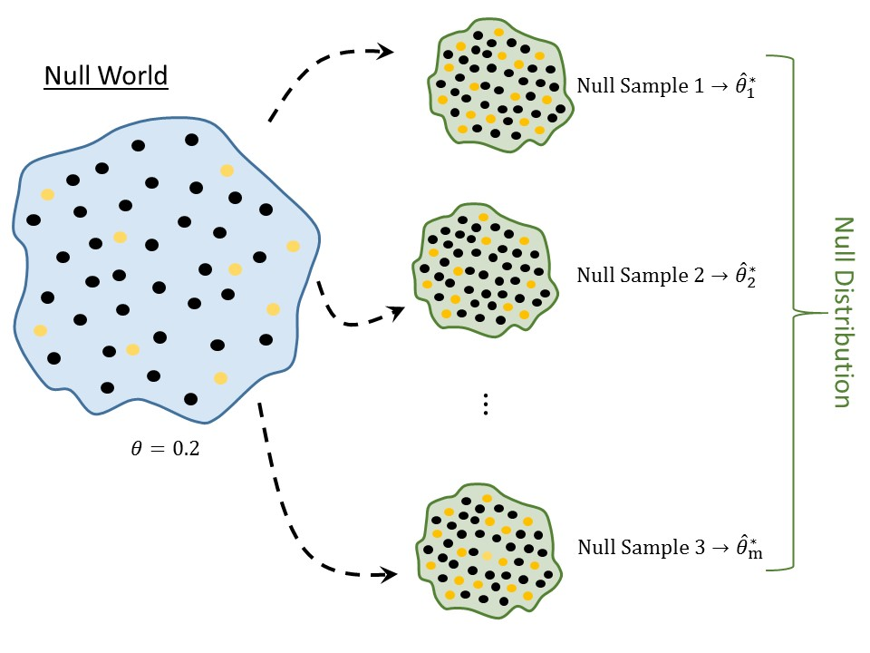

7 Quantifying the Evidence (Rejecting Bad Models)
Again, the goal of statistical inference is to use the sample as a snapshot of the underlying population (Figure 1.2). Recall that there are essentially two categories of questions we ask when trying to perform inference:
- Estimation: for example, what proportion of volunteers who clean wildlife following an oil spill experience adverse respiratory symptoms?
- Hypothesis Testing: is it reasonable no more than 1 in 5 volunteers who clean wildlife following an oil spill will experience adverse respiratory symptoms; or, is there evidence more than 1 in 5 volunteers who clean wildlife following an oil spill will experience adverse respiratory symptoms?
In Chapter 6, we addressed these questions through the use of confidence intervals — by specifying reasonable values of the parameters through a model of the sampling distribution. However, when our goal is testing a specific hypothesis, there is a second approach; this latter approach is useful when the research question involves multiple parameters and creating a confidence interval is challenging (see Unit III).
In Chapter 3, we described hypothesis testing as being similar to performing a trial in a course of law. Once the prosecution and defense have each presented their case, the jury deliberates and makes one of two decisions:
- Vote “guilty.” This happens when the jury believes the facts of the case are not consistent with an innocent defendant; therefore, the prosecution has convinced the jury (“beyond reasonable doubt”) that their initial assumption of innocence is not warranted.
- Vote “not guilty.” This happens when the jury believes the facts of the case are consistent with an innocent defendant; that is, while the prosecution presented a case that may have been consistent with a guilty defendant, it is still “reasonable” that the defendant is innocent. That is, the prosecution has not convinced the jury that their initial assumption of innocence is unwarranted.
Similar to a jury, we have a working hypothesis (the null hypothesis); we must quantify the evidence from the sample against this hypothesis. If we are convinced that the data is not consistent with this working hypothesis, we will declare we have evidence for the alternative hypothesis. Our goal in this section is to quantify that evidence.
7.1 Some Subtleties
We have described hypothesis testing as being similar to a U.S. trial. That analogy is also helpful in pointing out some subtleties in how we interpret our results. We take a moment to discuss those subtleties before discussing the process itself in order to avoid erroneous interpretations.
The jury weighs the case under the assumption of innocence. That is, they first develop a working hypothesis (the defendant is innocent). Then, the likelihood of the case against the defendant under this assumption is determined. For example, if a defendant were innocent of murder, it is unlikely to have five eye witnesses stating the defendant was seen standing over the victim, holding the murder weapon, and screaming “I killed him!” Since that case against the defendant does not jive with innocence, the jury convicts. If, however, the only case presented is that five eye witnesses place the defendant in the same city as the victim and the defendant matches the description of someone seen fleeing the crime scene, then the jury would not convict. Why? Because the case presented, while pointing toward guilt, is not overwhelming; these things could have happened by chance alone. Therefore, the case, while consistent with guilt does not provide evidence for guilt.
As in Chapter 6, we are making a distinction between “evidence for” a hypothesis and the data being “consistent with” a hypothesis. Evidence for a particular claim is only established by providing evidence against the opposite statement. However, consistency can be established without disqualifying any other statement; that is, data can be consistent with two opposing claims, but data cannot provide evidence for two opposing claims.
Big Idea
Data can be consistent with two opposing claims, but data cannot provide evidence for two opposing claims.
Also notice that a jury saying “not guilty” is not the same as saying “innocent.” That is, a lack of evidence to convict does not imply the defendant is innocent. A lack of evidence is simply a lack of evidence. The defendant may still be guilty, but the evidence has just not proven it.
Big Idea
A lack of evidence for a signal is not evidence for a lack of a signal.
Similarly, when performing a hypothesis test, we will weigh the data under the null hypothesis (our working assumption). Then, the likelihood of our data occurring by chance alone under this hypothesis is determined. If that likelihood is small (data is not consistent with the null hypothesis), we can conclude the data supports the alternative hypothesis (guilty). If, however, that likelihood is large (data is consistent with the null hypothesis), we can only conclude that the data is consistent with the hypotheses. We are not able to say “supports the null” because that would be like saying a defendant is innocent. We can’t prove innocence because we started by assuming it!
7.2 Assuming the Null Hypothesis
Consider the question we have been asking regarding the Deepwater Horizon Case Study discussed in Chapter 2:
Is there evidence that more than 1 in 5 volunteers assigned to clean wildlife develop adverse respiratory conditions?
Remember, we framed this question through statements about a parameter in Chapter 3:
\(H_0:\) the proportion of volunteers assigned to clean wildlife that develop adverse respiratory symptoms is no more than 0.20.
\(H_1:\) the proportion of volunteers assigned to clean wildlife that develop adverse respiratory symptoms exceeds 0.20.
Within the sample we observed that 27.8% of volunteers experienced adverse symptoms, which is certainly more than the 0.20; drawing the connection to the courtroom, the 27.8% is the case presented by the prosecution. From this, we see that the data is at least trending toward the alternative hypothesis. Just as a jury has to ask whether the case is overwhelming (no longer consistent with an innocent defendant) or whether the case is consistent with an innocent defendant, we must ask whether the 27.8% is overwhelming (no longer consistent with 1 in 5 volunteers developing adverse respiratory conditions) or consistent with the null hypothesis. After all, it is possible that we just have a strange sample; that is, it is possible our data is a fluke, resulting in an estimate larger than 0.2 by chance alone.
As we discussed in the previous chapter, we expect our estimate to vary to some degree from one sample to another. Essentially, we need to know if 27.8% of volunteers experiencing symptoms is a strong signal that the rate within the population is larger than 0.2 (1 in 5) or whether 27.8% is simply a fluke that might happen due to sampling variability. While we are going to be attacking the question differently in this chapter than the previous, we see that the key is still variability in the estimate. That is, we are back to the Fourth Fundamental Idea of Inference. As stated above, in order to determine evidence for one statement (captured by the alternative hypothesis), we begin by assuming the opposite statement (captured by the null hypothesis) as our working assumption. That is, if we want to know if 27.8% of volunteers experiencing adverse symptoms is “evidence,” we need to figure out what we expect to happen if only 1 in 5 volunteers actually develop adverse respiratory symptoms (the statement represented by the equality portion of the null hypothesis).
Consider this last statement. It is equivalent to saying “what type of actions would we expect of an innocent person?” Only when we know what to expect can we determine if the case in front of us is extreme enough to convict. Only when we know what to expect can we determine if the observed sample provides evidence in favor of the alternative. Our strategy is to enter a fake world…a world in which exactly 1 in 5 volunteers actually develop respiratory symptoms. That is, we enter a world in which the null hypothesis is true. Now, in this world, how do we know what to expect? We construct the sampling distribution for the proportion under this assumption that the null hypothesis is true; this is known as the null distribution.
Definition 7.1 (Null Distribution) The sampling distribution of a statistic when the null hypothesis is true.
The null distribution, the last in our Distributional Quartet, is a sampling distribution; it is just a sampling distribution for a world in which the null hypothesis is true. As a result, the process for constructing the null distribution is very similar to the process for constructing the sampling distribution (illustrated in Figure 7.1):
- Sample randomly from a fake population where the null hypothesis is true.
- For each sample, compute the statistic of interest.
- Repeat steps 1 and 2 several thousand times.
- Plot the statistics retained from each sample.
Notice that these are the same steps as constructing a sampling distribution with the exception that instead of sampling from the population of interest, we sample from a hypothetical population in which the null distribution is true.
Since the null distribution is a sampling distribution when a particular hypothesis is true, we are constrained by the same limitations as before. Namely, we are generally unable to construct the actual the null distribution; instead, we must construct a model for it. More, since the null distribution is a sampling distribution, the same techniques we use for modeling the sampling distribution can be modified to model the null distribution. The key is to enforce the null hypothesis to be true. As with sampling distributions, we emphasize the empirical model approach.
Using the computer, we first create a virtual world in which the null hypothesis is true. This often involves adjusting the original sample in order to make it consistent with having been drawn from a population in which the null hypothesis were true. The augmented data becomes the null world. We are then able to bootstrap from the augmented data to simulate repeated sampling when the null hypothesis is true. The details of this procedure are beyond the scope of our current discussion; it is more important to understand the conceptual idea of a null distribution at this point.
Figure 7.2 represents a model for the null distribution of the proportion of volunteers in a sample of 54 assigned to clean wildlife which would develop adverse symptoms when the we assume the actual proportion is 0.20.
Note
A null distribution is tied to a specific null hypothesis. A sampling distribution does not require a hypothesis to construct. So, while a sampling distribution could be used to address a variety of null hypotheses, a null distribution can only be used to address the corresponding set of hypotheses for which it was developed.
As we are introducing the concept of a null distribution, we will stick to modeling the null distribution of a statistic. Often times in a statistical analysis, the null distribution is computed for a numerical quantity known as a standardized statistic (see Chapter 12).
7.3 Using the Null Distribution
From Figure 7.2, we see that if the null hypothesis were true — if only 1 in 5 volunteers assigned to clean wildlife experienced symptoms — then in a sample of 54 individuals, we would expect the proportion who experienced symptoms to be somewhere between 0.1 and 0.3. So, we can think of the null distribution as setting up our expectations of what we should have observed if the null hypothesis were true. For example, if the null hypothesis were true, it would be nearly impossible that half of the individuals experienced symptoms. We are able to say that since 0.5 is way off in the tail region of the distribution, and we know that values in the tail region are more extreme. The question is then how extreme is our sample? Again, the null distribution is just setting up expectations; to determine if our sample provides evidence against the null hypothesis, we have to weigh the data against those expectations.
In our sample, we observed 27.8% of volunteers experience symptoms. Since 0.278 is towards the center of the distribution, we would say that it is not an extreme sample. In order to quantify how extreme (or not extreme) it is, we compute the fraction of values which are more extreme (larger in this case) than the value observed; that is, we compute the fraction of values that appear further to the right than 0.278 in the null distribution. Figure 7.3 illustrates this computation. Based on the null distribution, there is a 10.6% chance that if the null hypothesis were true — only 1 in 5 volunteers actually experienced symptoms — that in a random sample of 54 volunteers we would obtain data this extreme or more so (an observed proportion of 0.278 or larger) by chance alone (due to sampling variability). This area is known as the p-value.
Essentially, this tail area is quantifying the strength of the evidence. The smaller this area, the further in the tail region our observed statistic is; that is, the smaller this area, the more unexpected our data. Therefore, small areas indicate that the data (our case) does not jive with our expectations under the null hypothesis (innocence), forcing us to conclude the data provides evidence against the null hypothesis (guilty verdict). On the other hand, the larger this area, the closer toward the center our observed statistic is; that is, the larger this area, the less unexpected our data. Therefore, large areas indicate that the data (our case) is consistent with our expectations under the null hypothesis (innocence), forcing us to conclude the data is consistent with the null hypothesis (not guilty verdict).
Definition 7.2 (P-Value) The probability, assuming the null hypothesis is true, that we would observe a statistic, from sampling variability alone, as extreme or more so as that observed in our sample. The p-value quantifies the strength of evidence against the null hypothesis, with smaller values indicating stronger evidence.
For the Deepwater Horizon Case Study, we observed 27.8%, which is towards the center of the null distribution, and our p-value is quite large. Therefore, our data is consistent with what we might expect if the null hypothesis were true, and we conclude that there is no evidence that the rate of those experiencing symptoms exceeds 1 in 5.
It is natural to ask “how small does the p-value need to be to prove a statement?” Like a trial, the strength of the case presented depends on the context. In some studies, a p-value less than 0.01 may be strong evidence while in other studies a p-value less than \(10^{-6}\) is required. And, as in a trial, it is not only the strength of the case but the type of information presented (the presence of DNA may carry more weight than the presence of fingerprints). In statistics, it is important to consider the effect size (some measure of the signal in the data) as well as the p-value. That is, consider whether the difference between the estimate and the null value is actually large for the specific context; this is always based on subject-matter expertise. It is often helpful, whenever possible, to report a confidence interval alongside a p-value.
Gradient of Evidence
While what constitutes evidence may vary from discipline to discipline, the list below is a good rule of thumb:
- \(p \geq 0.1\): no evidence against the null hypothesis.
- \(0.05 \leq p < 0.1\): weak evidence against the null hypothesis.
- \(0.01 \leq p < 0.05\): some evidence against the null hypothesis.
- \(0.001 \leq p < 0.01\): evidence against the null hypothesis.
- \(p < 0.001\): strong evidence against the null hypothesis.
Of course, evidence “against the null hypothesis” is equivalent to evidence “for the alternative hypothesis.” As with any rule of thumb, the above gradient should not be considered binding and may vary depending on the application.
We can think of the p-value as a measure of whether the data is able to discern the difference between a hypothesized value (the null value) and that observed in the sample. When the p-value is sufficiently low, we might say there is a “statistically discernible” difference.
Warning
You may see some authors refer to a “significance level,” often denoted by the Greek letter alpha. The significance level is a pre-determined threshold for declaring a p-value to be “small.” That is, p-values below the significance level indicate there is evidence against the null hypothesis, and p-values above the significance level indicate there is no evidence against the null hypothesis.
This has led to authors stating that a study shows a “statistically significant” difference. We dislike this language because the term “significant” suggests the difference is important. However, we may be able to detect a difference that is not meaningful in real life. Determining importance is a matter for discipline experts.
We prefer the term “statistically discernible” and the gradient of evidence provided above instead of the binary decision that results from defining a significance level.
As Regina Nuzzo once quipped1, we can think of the p-value as an “index of holy shitness.” Essentially, small p-values tell you the data was really unexpected under the null hypothesis (“wow, that was unexpected”); and, larger p-values tell you the data was about what you would expect under the null hypothesis (“yeah, that was about what we expected”). When your data surprises you (from the perspective of the null hypothesis), then we start to believe that our underlying assumption about that data (the null hypothesis) is not appropriate.
Big Idea
A p-value should never be reported in isolation. It should always be accompanied by a confidence interval, a numerical summary of the data, or a graphical summary of the data — something which indicates the effect size and variability in the data.
Note
Here, we refer to the “effect size” as the impact of the signal in the data. However, some disciplines rely on standardized effect sizes which are unit-less measurements. These measurements are typically a ratio of the difference between the observed statistic and the null value to a measure of the variability in the data.
Regardless of whether you use the raw effect size or a standardized effect size, the idea is the same — you should understand whether the signal you are detecting in the data is of practical relevance in your discipline.
Process for Computing a P-Value
The following is a general procedure for computing a p-value:
- Define the null and alternative hypotheses.
- Construct a model for the null distribution of the desired statistic.
- Compute the desired statistic for the original sample.
- Overlay the statistic from step (3) on the model developed in step (2), and then compute the area under the curve for values more extreme than that observed in step (3).
Notice that the definition of a p-value, and this general procedure, apply regardless of the technique used for constructing the model of the null distribution.
Like confidence intervals, p-values are often misinterpreted. In fact, they have become so abused that some researchers argue against their use. It is our opinion that the p-value can be a useful tool once it is appropriately understood; so, let’s dispel some of the misconceptions.
7.4 Incorrect Interpretations of a P-Value
Suppose we have a p-value of \(p\). The following are incorrect interpretations of that p-value:
- There is a \(100p\)% chance that the null hypothesis is correct.
- When \(p\) is large, we have evidence (or “the data supports”) the null hypothesis is correct.
The first statement is incorrect because it assumes the parameter is moving. Hypotheses are statements about parameters, and parameters are fixed, unknown values. One of the hypotheses is true, and the other is not. Our ignorance does not change this. Since the parameter is a fixed value, it does not make sense to think about the likelihood that either hypothesis is correct. Instead, the p-value quantifies the likelihood of observing a particular statistic assuming the null is true.
The second statement has circular logic. Again, when computing the p-value, we assumed the null hypothesis was correct; so, we cannot prove what we start off assuming. It mistakenly assumes that a lack of evidence for the alternative hypothesis is evidence for the null hypothesis, but that is not true. A large p-value simply indicates the data is consistent with the null hypothesis, but a large p-value cannot provide evidence to support the null hypothesis. This is similar to the fact that in a trial, the jury can declare “not guilty” (you did not convince us of guilt), but they do not declare “innocent.”
For the Deepwater Horizon Case Study, we obtained a p-value of 0.106. Considering the above, the following are incorrect interpretations:
- There is a 10.6% chance that only 1 in 5 volunteers assigned to clean wildlife will experience adverse symptoms.
- Since the p-value is large, there is evidence (or the data supports the claim) that 1 in 5 volunteers assigned to clean wildlife will experience adverse symptoms.
Thinking about the p-value correctly, we are led to the following conclusion:
- With a p-value of 0.106, our data is consistent with only 1 in 5 volunteers assigned to clean wildlife experiencing adverse respiratory symptoms.
Unfortunately, our data is also consistent with more than 1 in 5 volunteers assigned to clean wildlife experiencing adverse respiratory symptoms. The fact that our data is consistent with both hypotheses may be an unsatisfying conclusion, but it is still a conclusion nonetheless.
This process of using a p-value to quantify the evidence against a particular model is captured in our last of the Five Fundamental Ideas of Inference.
Fundamental Idea V
With a model for the distribution of a statistic under a proposed model, we can quantify the the likelihood of an observed sample under that proposed model. This allows us to draw conclusions about the corresponding parameter, and therefore the population, of interest.
7.5 Sampling Distributions vs. Null Distributions
Clearly the sampling distribution and null distribution of a statistic are closely related. The difference is that the null distribution is created under a proposed model while the sampling distribution lets the data speak for itself. It is worth taking just a moment to highlight the differences in the use of these two components of the Distributional Quartet.
The sampling distribution is centered on the true value of the parameter; the null distribution is centered on the null value. Once we assume the null hypothesis is true, we have a value for the parameter; as a result, we expect the sampling distribution under this assumption (that is, the null distribution) to be centered on this hypothesized value. So, null distributions of a statistic are always centered on the null value.
When we model the sampling distribution, this leads to a confidence interval. That confidence interval specifies the reasonable value of the parameter based on the observed data.
When we model the null distribution, we are able to compute a p-value. The p-value quantifies how likely our observed statistic is under the proposed null hypothesis.
Big Idea
Model the sampling distribution to construct a confidence interval; to assess a hypothesis the null value is overlaid on the model for the sampling distribution. Extreme values of the model for the sampling distribution are unreasonable values for the parameter.
Model the null distribution to compute a p-value; to assess a hypothesis, the statistic from the sample is overlaid on the model for the null distribution. Extreme values of the model for the distribution are values which provide evidence against the null hypothesis.
Stated in a keynote presentation at USCOTS23 (https://www.causeweb.org/cause/uscots/uscots23/keynotes/1).↩︎